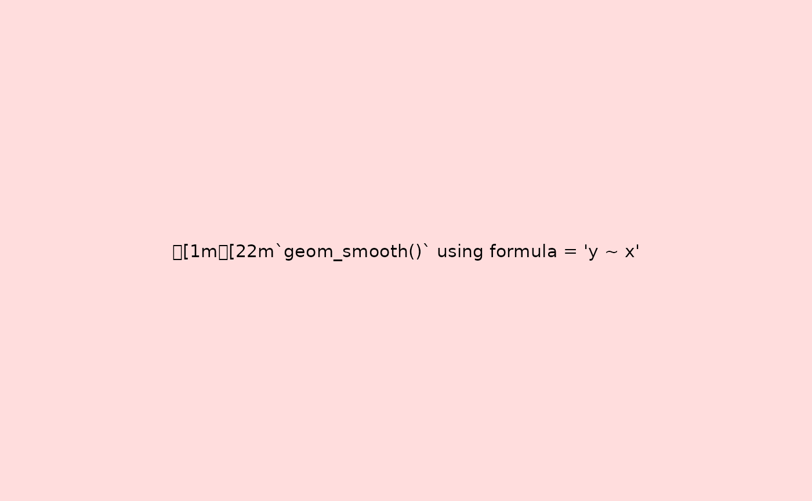

Recording ggplot Objects with chronicler
recording-ggplot.RmdIntroduction
Working with ggplot2 can present a unique challenge: lazy evaluation. An error in your plot code, like a typo in a variable name, won’t stop execution when you define the plot. The error only appears when you try to print or render it. This can be especially frustrating when rendering a long R Markdown or Quarto document, where a single broken plot can cause the entire process to fail.
{chronicler} provides a solution with
record_ggplot(). This function acts as a safety net,
wrapping your entire ggplot expression in a recorder that safely
evaluates it. It captures not only the final plot, but also all the
errors, warnings, and messages that occur during its construction.
This process results in two key benefits:
-
Crash-Proof Rendering: If a plot fails,
record_ggplot()catches the error and produces a placeholder error plot that displays the error message. This allows your R Markdown documents to render completely, letting you fix the broken plot later. - Enhanced Debugging: Every step is logged. You get a detailed, reproducible trace of the plot’s construction, making it much easier to diagnose issues.
This vignette demonstrates how to use record_ggplot() to
make your plotting workflows more robust and debuggable.
Basic Recording and Inspection
Let’s start by recording a valid ggplot expression.
record_ggplot() captures the entire call, including all the
layers.
r_plot <- record_ggplot(
ggplot(mtcars, aes(x = mpg, y = hp)) +
geom_point() +
geom_smooth(method = "lm", formula = y~x)
)The resulting r_plot object is a
chronicle. When you print it, the ggplot object is
rendered as usual. Behind the scenes, however, {chronicler}
has logged the entire process.
To get the raw ggplot object back, you can use
unveil():
unveil(r_plot)
To see the detailed log, including any messages generated during
rendering (like the one from geom_smooth), use
read_log():
read_log(r_plot)
#> [1] "OK `ggplot(mtcars, aes(x = mpg, y = hp)) + geom_point() + geom_smooth(method = \"lm\", \n formula = y ~ x)` at 11:39:18 (0.771s)"
#> [2] "Total: 0.771 secs"Handling Failures Gracefully
The real power of record_ggplot() becomes apparent when
something goes wrong.
Capturing Errors
Consider a common typo, where hp is misspelled as
hpp. A standard ggplot call would throw an error upon
printing. With record_ggplot(), the error is caught and
logged, and an informative error plot is generated instead.
r_bad <- record_ggplot(
ggplot(mtcars, aes(x = mpg, y = hpp)) + # typo: 'hpp'
geom_point()
)
# Printing the object shows the error plot, not a crash
r_bad
#> NOK! Value computed unsuccessfully:
#> ---------------
#> Just
#>
#> ---------------
#> This is an object of type `chronicle`.
#> Retrieve the value of this object with unveil(.c, "value").
#> To read the log of this object, call read_log(.c).
# The log tells you exactly what went wrong
read_log(r_bad)
#> [1] "NOK `ggplot(mtcars, aes(x = mpg, y = hpp)) + geom_point()` at 11:39:20 (0.043s)"
#> [2] "Total: 0.043 secs"The R session continues without interruption, and you have a clear record of the problem.
Controlling Strictness
Sometimes, you may want to treat messages or warnings as if they were
failures. The strict argument gives you this control. For
example, geom_smooth() produces a message about the formula
it’s using. By setting strict = 3, we can tell
record_ggplot to treat any message as a critical event and
generate an error plot.
r_plot_strict <- record_ggplot(
ggplot(mtcars, aes(x = mpg, y = hp)) +
geom_point() +
geom_smooth(method = "lm"),
strict = 3
)Now, instead of the plot, we see the captured message displayed in the error plot:
unveil(r_plot_strict)
Conclusion
record_ggplot() provides a safe and traceable way to
build ggplot objects. By wrapping your plot code, it makes complex plots
easier to debug and prevents common errors from halting your analysis or
document rendering. It transforms plot creation from a potentially
disruptive step into a logged, reproducible, and robust part of your
workflow.